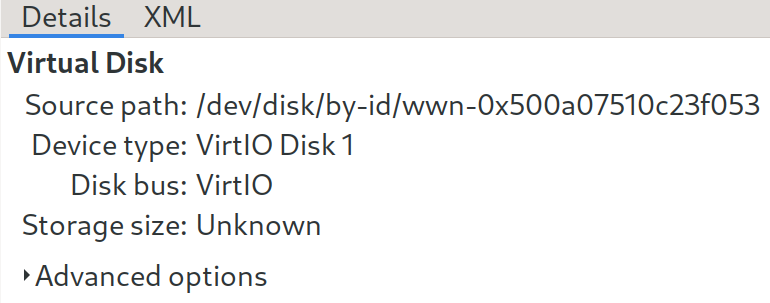

Specs
首先先附上我桌機的規格：
- CPU: Intel i9-10900
- Motherboard: Gigabyte Vision G Z490
- RAM: Kingston 16GB DDR4 2666MHz * 2
- Cooler: Noctua NH-D15S
- Power Supply: LEADEX Gold 750W
- GPU:
- NVIDIA RTX 3070 @ PCIe 3.0 x8
- AMD Radeon RX 580 8GB @ PCIe 3.0 x8
- Storage:
- 1TB NVMe PCIe SSD (Pioneer APS-SE20G 1TB)
- 512GB NVMe PCIe SSD (Samsung SM951a)
- 512GB AHCI SATA SSD * 2
- 1TB HDD
Current Setup
以下是原本的電腦配置，在一般電腦上跑黑蘋果的方法這裡不會解釋。基本上黑蘋果本身可以驅動所有的東西，例如Wi-Fi,Bluetooth,AirDrop,Sidecar…。
- 1TB NVMe PCIe SSD (Pioneer APS-SE20G 1TB)
- macOS Catalina 10.15.7
- Arch Linux
- 512GB NVMe PCIe SSD (Samsung SM951a)
- Windows 10
- SATA Disks
- Data
目標
因為有了雙顯卡，我希望可以在Linux下利用KVM技術用接近原生的效能模擬兩個系統，並透過GPU passthrough來達成不錯的顯示效能。
屏蔽GPU
參考教學
這裡問題最多，最重要的就是每個IOMMU group是導入PCIe裝置的最小單位。在Intel Core系列上，直通CPU的16條PCIe並沒有ACS(Access Control Services)，所以在我的配置下兩顆GPU都屬於同個IOMMU group。理論上這樣是沒辦法分別導向到不同VM的(PCH上通常都會有ACS，所以經過主機板的PCIe裝置應該是可以正常區分成不同group的)。
不過還是有一個辦法「有可能」可以解決，叫做ACS Patch，能夠把同個group不同裝置切開成不同IOMMU group。這個東西不是萬能的，它只是欺騙Linux kernel IOMMU group的樣子，在物理(電)層面上，原本同個group的裝置還是有辦法看到對方。使用這種patch會出問題的情況通常是兩顆GPU都是同樣的，所以在driver載入的時候它會想辦法去init看到的那兩顆GPU，產生不可預期的錯誤。不過在我的情況上，GPU分別為NVIDIA和AMD，會出問題的機率不大，我才使這個patch。切記在使用這個patch前，務必要先暸解潛在的風險。
在Arch Linux下安裝ACS patch的方式很簡單。安裝linux-vfio(AUR)，使用linux-vfio客製kernel開機並在boot-args加上pcie_acs_override=downstream。這個patch會重新編譯linux kernel，所以記得在執行安裝前設定make -jX的FLAG，縮短編譯時間。
macOS VM
基本上照著kholia/OSX-KVM的操作就可以成功了，然後再把實體硬碟導入到VM裡面(使用virtio)就好。
如果在導入磁碟時出現
Error starting domain: Unable to get devmapper targets for /dev/sdX
請記得downgrade libvirt 版本到 6.5.0-1。
另外我還將Bluetooth導入到VM裡面(USB介面)，成功驅動，但是Wi-Fi部分就有問題，目前還沒有解決方法。有線網卡的型號請記得設定成e1000e，要不然VM的上傳速度會慢到受不了。為了更有效地使用CPU資源，可以考慮CPU Pinning
Windows VM
理論上Windows會比較簡單，可是我在這裡反而遇到了很多問題。
以下是簡單的解決方法
- 虛擬網卡Device model使用virtio (改善網路效能)

- 硬碟Bus使用VirtIO (增加硬碟讀取速度，同樣也可套用在上面的macOS) 
- 安裝virtio drivers: fedora virtio-win.iso
- NVIDIA 驅動程式安裝後GPU沒有訊號。這個其實就是Code 43，NVIDIA driver偵測到使用者的GPU不是Tesla,Quadro等特殊產品線，而且又在VM裡面的時候，就會把RTX/GTX的GPU給屏蔽。解決方法就是騙它這台VM不是VM。Solution
- 聲音傳遞方式使用duncanthrax/scream，配合host上的pluseaudio。
- 導入整顆NVMe SSD進去(類似上面屏蔽GPU的方法，需要把SSD的PCIe ID擋住避免host使用)。
Evdev
如果沒有多重滑鼠/鍵盤的話，可以考慮使用Evdev來傳遞訊號。ArchLinux Wiki上面都有寫詳細的教學。不過這有一個問題就是它不支援滑鼠熱插拔，如果VM使用到一半，鍵盤拔掉後又重新接回來，Evdev會沒辦法運作，需要將VM重新開機才生效。不過這裡有一個解決方法，使用額外的script去處理這種問題：aiberia/persistent-evdev。
效能測試
Windows
在Windows下跑3D Mark的RTX 3070分數與原生系統下的分數差距不到1%。使用GeekBench 5測試CPU的多核效能為1000*p，p為VM CPU數量，單核大概為900~1000。在遊玩遊戲上基本上沒有什麼問題。
macOS
這篇文就是在這裡產生出來的。我在macOS不會用到太多的顯示效能，導入GPU只是為了不要使用QEMU模擬的GPU，因為它的效能差到極致。目前在使用上也沒碰到什麼太大的問題。